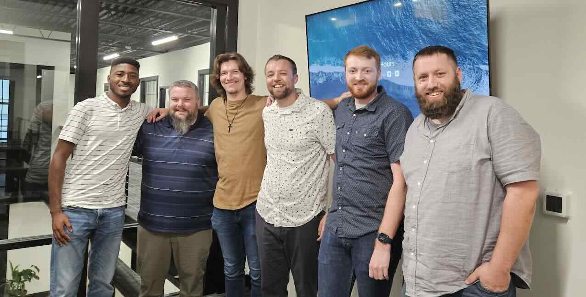
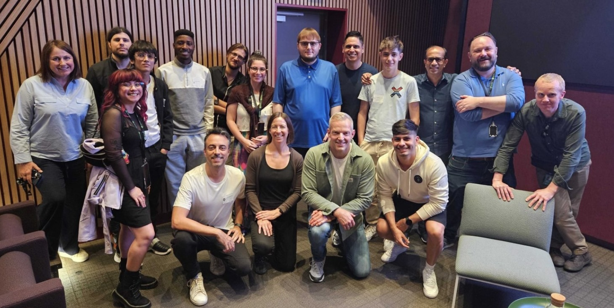
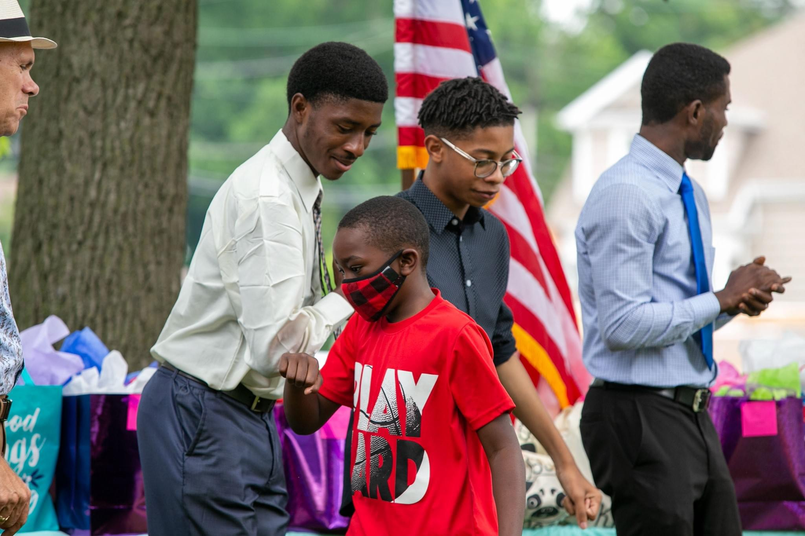
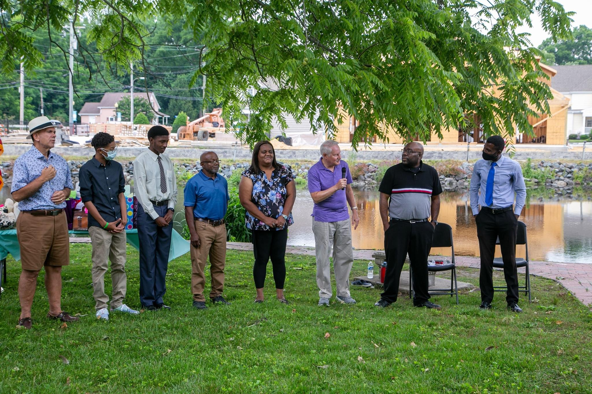
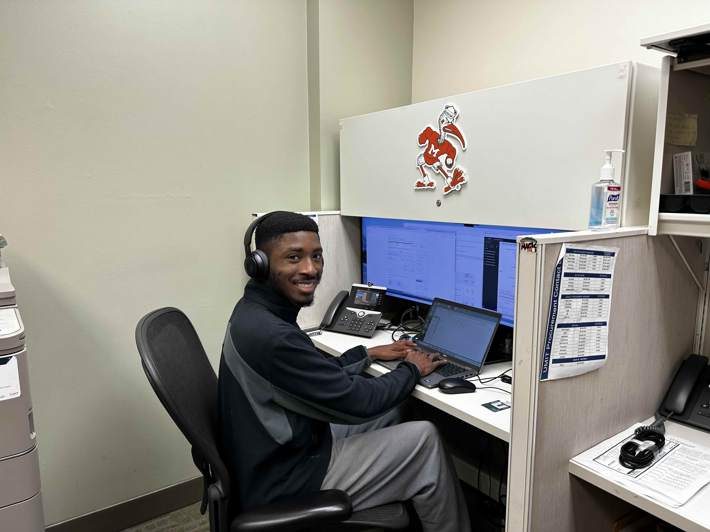
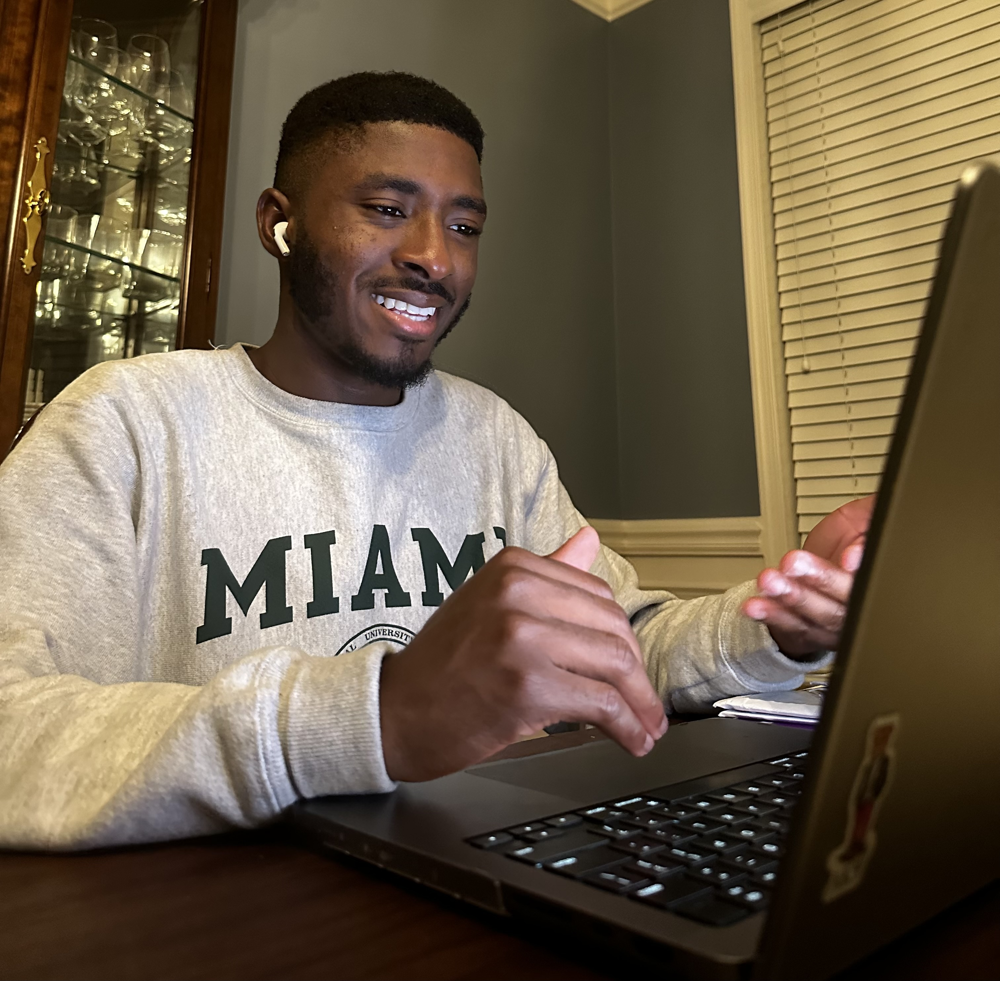

Internship at Delaware Elevator, Inc.
During my internships at Delaware Elevator in the summers of 2023 and 2024,
I strengthened my collaboration and critical thinking by resolving conflicts and using a structured approach to overcome them and implment desired solutions.

I developed strong collaboration skills by working closely with other teams to resolve conflicts efficiently and address challenges through problem-solving approaches.
This allowed me to build my critical thinking abilities, enabling me to evaluate problems from multiple perspectives and implement effective solutions.
Alpha Kappa Psi Membership
Since November 2022, I have been a proud member of Alpha Kappa Psi (AKPsi), the premier professional business fraternity.
As a Computer Science student, I chose to engage with Alpha Kappa Psi to expand my understanding of the business world, strengthen my leadership skills, and build a diverse professional network that complements my technical expertise.
Through AKPsi, I have participated in professional workshops, networking events, and mentorship programs that have honed my communication, collaboration, and problem-solving abilities. This experience has been crucial in helping me navigate the intersection of technology and business, preparing me to leverage my technical skills in the real world.
Spotify Community Star
Since August of 2018, I've been an active member of the Spotify Community, a forum where users seek support, share ideas, and collaborate about anything Spotify. As a Super User, I assist with a wide range of issues, from basic troubleshooting to more complex questions, like account transfers and varius platform features. In addition to providing solutions, I have also published informative articles.
Each year, I earn the opportunity to visit Spotify's headquarters to meet fellow users as well as important teams at Spotify. Here are some of my published articles to-date:
Youth Board Member at the ARK Educational Resource Center
From September 2019 to August 2022, I served as a Youth Board Member for The ARK.
I actively participated in monthly board meetings, contributed to strategies aimed at reducing the high school dropout rate, and supported student success through tutoring programs.

Additionally, I attended annual banquets and award ceremonies to celebrate student achievements. This experience allowed me to develop leadership skills, enhance my communication abilities, and gain a deeper understanding of the challenges facing students within my community.
Lab technician at the University of Miami
Since September of 2022, I have managed PC encryption and maintained loaner inventory at the University of Miami,
ensuring secure and efficient technology operations. This includes setting up new and existing computers, and interacting with various employees at the University.

This role has strengthened my time management, collaboration, and problem-solving skills,
providing me with valuable hands-on experience while balancing my responsibilities as a full-time student.
User Experience Research and Mobile Design
A crucial part of computing involves creating innovative software solutions that enhance the user experience. To that end, and knowing my passiobn for technology and software, I have started freelance website testing through UserTesting, Inc. providing my experience and feedback on various prototypes and mockups, to make websites better.
 Through that experience, I have gained critical thinking skills and public speaking skills as I regularly interact with real representatives from companies seeking feedback from their users.